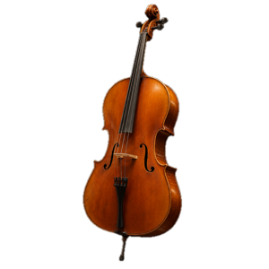
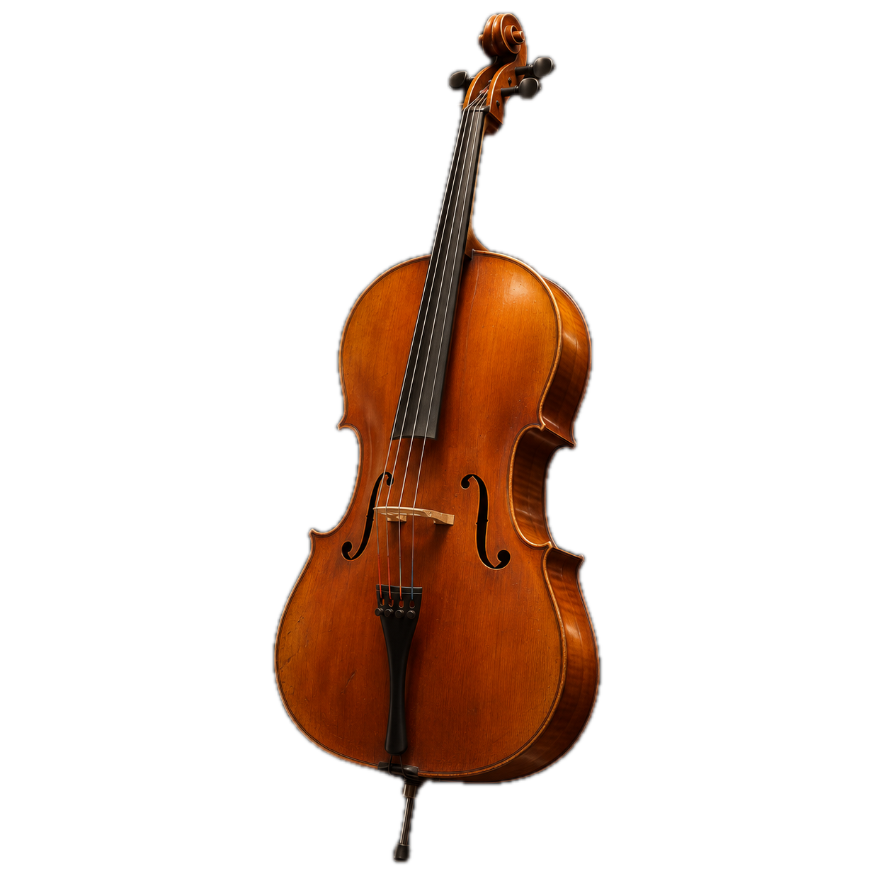
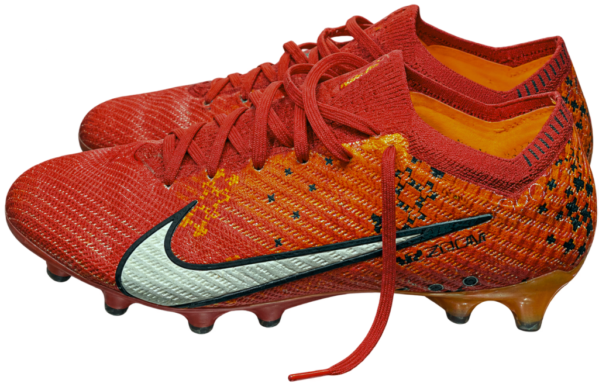
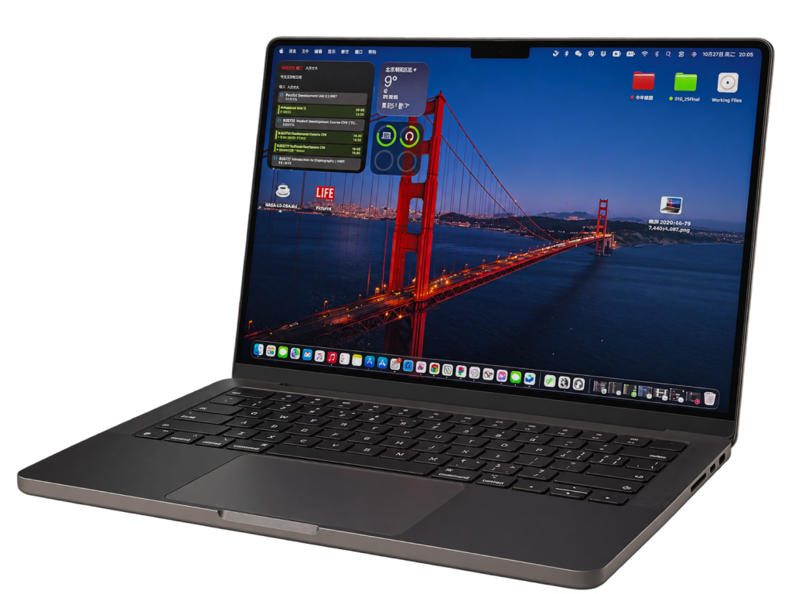

How can I help
稀奇古怪的想法
我时常会有一些天马行空的想法，而且我觉得这种想法很天才，我要尽力地去实现它。如果你有什么想到的好玩的事情，可以跟我一起分享。
关于音乐
我演奏大提琴，但是我也对别的音乐形式非常感兴趣。如果你想跟我一起玩音乐，也随时欢迎。
一起踢球 ⚽
可以来找我踢球！
我时常会有一些天马行空的想法，而且我觉得这种想法很天才，我要尽力地去实现它。如果你有什么想到的好玩的事情，可以跟我一起分享。
我演奏大提琴，但是我也对别的音乐形式非常感兴趣。如果你想跟我一起玩音乐，也随时欢迎。
可以来找我踢球！


因为老师是国家大剧院管弦乐团的成员，我从身高被允许进入大剧院以来，就得到过无数次进入大剧院观看顶级乐团演出的机会。
从此后我就想着，一定要成为他们那样的人，站上最大的舞台，过着平静而简单的生活。我也是朝着这个方向努力的，那是在我12岁之前...
事情是在三年前改变的。我升入了初中，遭到了排挤，每天惶惶度日。而在这时，我的乐团中也只剩下了我一个不在中央音乐学院，也还没有打算走专业的学生。
而从乐团成立开始就加入的我，因为每天没有专业生那样的训练时间，而水平越来越达不到乐团的要求。
后来我已经确定要去到探月，因为担心学业压力，而且确定不想去中央音乐学院附中卷，而和这个我加入了五年的乐团说了再见。

第一次看到这双鞋的时候，我记得很清楚，是在天朗足球的抖音视频上。当时的我刚开始踢足球，却已经被我表哥送我了两双足球鞋。但我记得那么清楚，是因为这是第一次我真心觉得一双足球鞋好看。
买这双鞋不久我就上了初中，但这双鞋并没有沾染许多的尘土。那时的我已经感觉自己于周围有些格格不入，周围的人都能于别人流畅的交流，我却不知道该怎么和陌生人建立联系。所以我渐渐开始害怕于别人说话。
即便如此我还是加入了足球队，想着或许有共同语言他们就能接纳我。但是我错了。因为那时的我性格比较耿直，说话经常不留情面，因此许多队友便不想与我扯上关系，而新上任的足球队的队长也抓住这点，打压我来让其他队员信服。
渐渐地到后来，我即使去找很业余的同学踢球他们也会拒绝我。而对于当时的我来说，足球便是一个人的运动。
我记得是在一个特别平常的晚上，好不容易有一场球局没有人，我的同学邀请我去踢。那是我初中两年踢的最开心的一次，进了两个球还有一个助攻，发挥很亮眼。当时的晚霞很漂亮，我脱下鞋准备走，却发现鞋底裂了一个口子。或许它和我一样，早就习惯了一个人。
而现在这双鞋一直躺在我的鞋柜里面，我偶尔还是会拿出来看看，心里想着还是这么好看，但再也没有穿上过。

我从小家里管电子产品很严格，我8岁前接触到的电子消费内容是我爸每天晚上19:30的新闻联播。而一年后我有了我的第一个电子产品：步步高学习机。。
即便是这样我也玩的很开心，每天玩玩跳一跳，听几集我的世界的有声书，感觉每天都特别通透。
我的第一台电脑是我妈在公司年会抽中的二等奖：一台huawei电脑。我本来想着她应该会把她几年前的MacBook Air给我，但她执意要让我用新的，现在看来这是个糟糕的决定。
这台电脑的i5处理器也不知道有什么神奇的魔力，点开一个Word文档超过20分钟就会闪退，我还在这台电脑上装过地平线4，玩超过五分钟也会发生同样的事情。
在入学探月之前，我想着不能再这样下去，于是鼓起勇气向我爸把我的生日礼物从一个手表升级到了一个苹果电脑。他同意了。
之后我们去了三里屯的Apple Store，我还是软磨硬泡了很久才说服我爸加上磨砂屏幕的配置。这就是我如何打开了新世界的大门。
来到探月之后的我，在别人的带领下第一次直到什么是AI...不对，应该是从直到什么是浏览器开始的。我之前从没有如此高频率的用过电子产品和接收网上的信息，所以我在这段时间中学到的知识，比我上的任何一门课都多，也不如说是一些课教会了我这些知识。
后来我开始了Vibe Coding，从小游戏开始，一步一步做到现在这个完整的网站。虽然还有很多可以进步，但只是我有生以来，最快乐的一次学习体验。